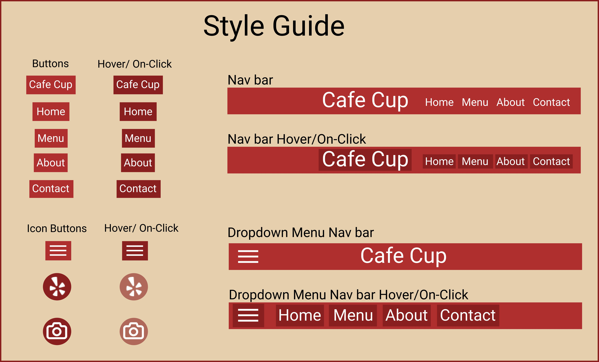

During my sophomore fall semester at Brown, my UI/UX class assigned us a project: pick a website that was accessible to the public but could be redesigned to decrease usability.
The website does not have a cohesive layout; the important information is scattered throughout the page in random dividers varying in size. The nav bar is also confusing because it's not in a traditional places usually seen in websites. Additionally,the footer is missing the "menu" link and doesn't have all the components in the nav bar. The photos are unappealing and scattered, the font is too small and has some inconsistent spacing so its hard to read making the site even more harder to use. Overall, it feels dated and the layout of the buttons and the pictures makes the website hard to use and navigate.
This website is incredibly hard to learn. The small buttons in the lower right hand corners all lead to the menu; however, it's really hard to even see at first glance. Plus, the hit boxes are only set to be the small buttons so the user has to learn that they can't just click the picture itself. These small inconsistent details make the website confusing and unappealing.
Overall, this page is very forgettable. There is nothing either interface-wise or even graphic-wise that stands out or makes the user want to come back to the site more than once. In fact, the website might actually make the cafe more unappealing and unappetizing due to the crude pictures and the disregard for the appearance. This can potentially hurt business sales due to the first impressions and make the restaurant feel as if they don't care.
Using WebAIM WAVE , a website that reads a website and tells the programer any accessibility concerns, the program detected multiple errors both in the code and structural issues. For instance, there is 8 redundant links to the menu, no alternative text for users that see the pictures on their computer, and text that was barely visible due to poor contrast between the two colors. Additionally, there were many instances of large text blocks and the page itself has no structure at all. Because of these factors, I believe that the website could be redesigned to better optimize the structure and information on the page to help user accessibility.
First, I completely redesigned the layout of the website to make it more streamlines and readable for
users. Instead of a static almost JPEG type webpage, I added a navigation bar in the header with clear
access to the menu and the information about the website. I then wanted to make sure the pictures of the
food were easily seen and more appealing by putting them right below the nav bar.
In the
original
website, I saw that the description of the Cafe as a whole to be hidden due to the orginization so I
increased the spacing of the dividers to make sure the user knew where the most important information
was. Lastly, I made a footer at the bottom of the page to quickly access other media outlets quickly for
users to find out reviews for the cafe.
Like the desktop version, I kept the same properties and layout for: thepictures below the nav
bar, important information below, and the footer and its
social media elements.
However, I decided to make a dropdown menu to condense the navigation bar, keeping the font large enough
for the user. As a result, the user would still be able to access it at any time.
I also changed the description part to better fit a smaller, more narrow screen;
due to the nature of touch screen technology, the user can just scroll down instead of reading
side-to-side.
The phone display is the same as the tablet version except with modified font size and grid template size to accommodate for the user's phone.
Using my lo-fi sketches, I translated it into HTML and CSS to create a new, more refined website for the cafe.
For my hi-fi desktop mockup, I made an interactable navigation bar that links to the respective sites on
he original website. The picture rotates every 5 seconds to a new photo of the food served at the
location and can be clicked on to go to the menu. The user can also clearly see the description and
history of the cafe and the information is split using a break line.
Below the break line, the important information is easily readable and the location and the map both
link to google maps to the cafe as well. Lastly, the footer follows the user's scrolls so they can
easily access the social media or yelp page for reviews.
Similar to my lo-fi mockups, I replaced the straight menu with a dropdown menu to save space on the
smaller screens. Once clicked, the hamburger icon on the left creates the original menu without the name
of the Cafe (see style guide). I also made the story description more linear and adjusted the font size
and the grid sizes.
I also made the interface more interactive with hover response and direct links from the images to the
sub-pages or websites associated.
The phone display is the same as the tablet version except with modified font size and grid template size to accommodate for the user's phone. Again, more streamlined and linear design which creates a better experience while swiping up.
For my website, I chose to have a unifying style guide that helped bring all the elements together:

Last but not least, the responsiveness of my website is quite simple; once the width of the page gets to a
certain pixel size, the fonts, pictures, navigation, and buttons all either increase or decrease in size /
change formats entirely to fit the proffered screen.
The link to the final website can be found here
From this project, I have learned that streamlined designs for websites with clear and recognizable features can help the user understand the company as a whole. If websites are cluttered and confusing, users first impression can hinder sales or costumer satisfaction. The better a webpage is, the longer the user will stay on and read what you say. An enjoyable, clear interface also